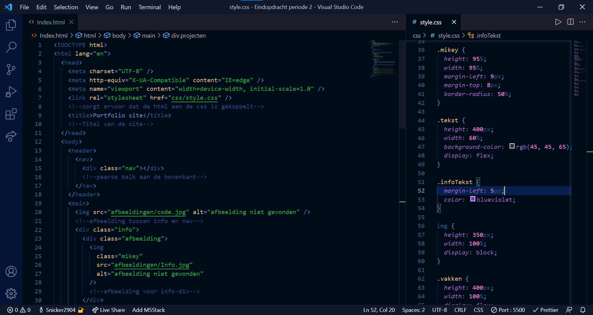
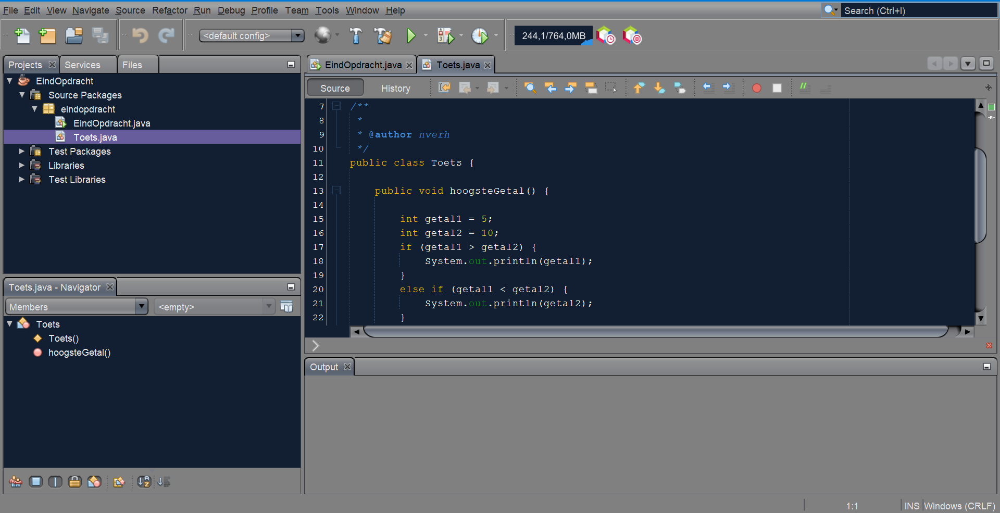
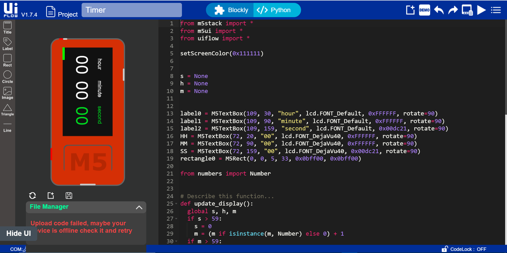

Over mij
Hoi mijn naam is Nick, ik ben 17 jaar oud. Ik ben een student op ROC
nijmegen waar ik bezig ben met mijn opleiding om softwaredeveloper
te worden.
Hier onder kun je een paar vakken/projecten vinden waar ik nu mee
bezig ben




